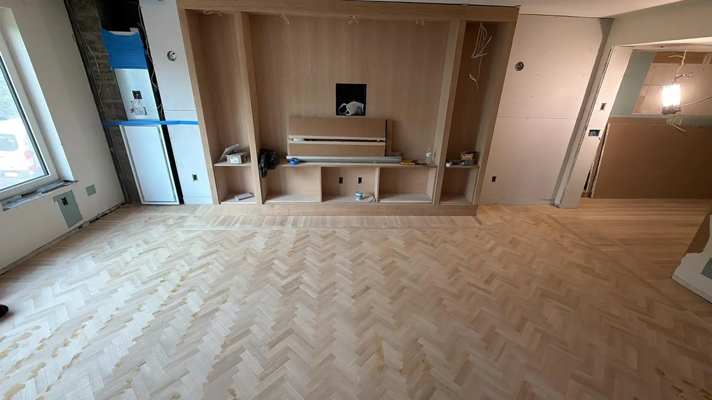
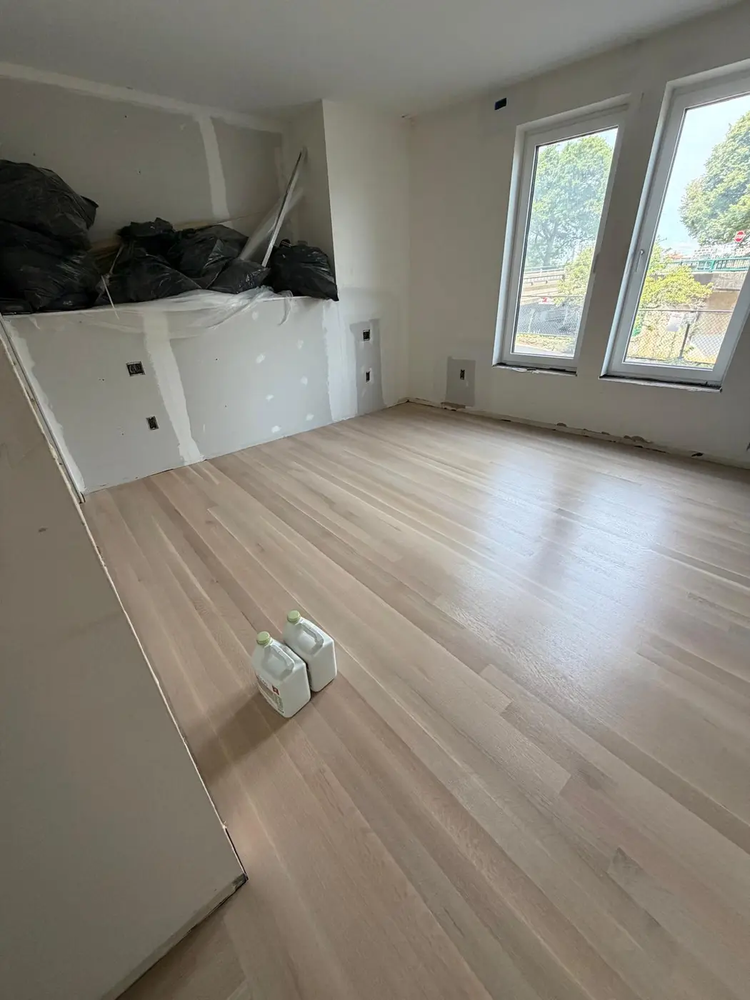
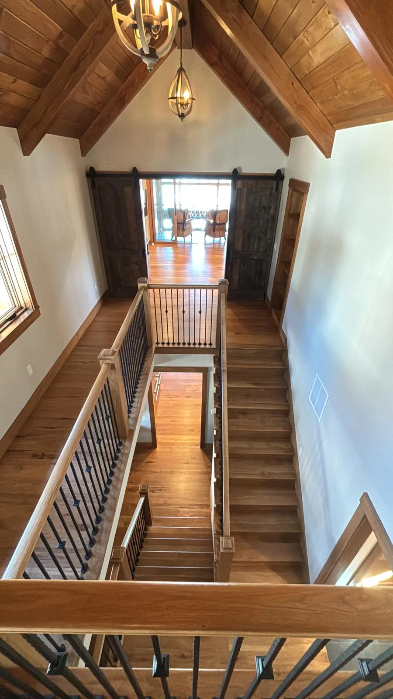

Hardwood floor refinishing in Boston MA starts long before anyone turns on a sander. In this city the floor is usually the easy part. The harder part is the elevator reservation, the parking on a narrow street, the association that allows noise only during certain hours, and the neighbor below who shares your floor framing. Boston has some of the oldest wood floors in the country, much of it oak and heart pine that has already been sanded more than once. We read how much life that wood has left, plan the building side in writing, and give you a free written quote where every line is a real cost, not a guess.
What a freshly sanded and finished Boston floor looks like
Real photos from a recent JPN job in Boston. This white oak was installed new, then sanded and finished in place by the same crew that refinishes floors across the city. It is the same sanding and finishing work we do on older Boston floors, done to a clean, natural tone.



What a Boston refinishing job includes
- An in-person visit to measure the floor, check how much wood is left above the tongue, and walk the route from the street to your unit
- A written plan for the building: elevator or stair access, work hours, parking, and protection of shared spaces
- Floor protection from the entry door to the work area, plus cover for railings, door frames, and elevator walls when needed
- Dust-contained sanding to clean wood, with edges, corners, and the strip along baseboards and radiators done by hand
- Repairs before finish: loose boards reset, gaps filled, old carpet glue and staple holes cleaned up, damaged pieces replaced
- Stain samples laid on your own sanded floor, or a clear finish that shows the natural color of the wood
- Two or three coats of finish with a light buff between coats, then clean-up and a final walkthrough with you
- Video of the job from bare wood to the last coat, useful for owners who live elsewhere or associations that want a record
The floors we see across Boston neighborhoods
Boston floors tell you their history the moment the old finish comes off. In the brownstones and row houses of Back Bay, the South End, and Beacon Hill, we often find narrow oak laid over older pine, borders and inlays around the edge of front parlors, and boards that have been sanded so many times that the nail heads sit close to the surface. In the triple-deckers and two-families of Dorchester, Jamaica Plain, and Roslindale, front rooms are usually oak while kitchens and back bedrooms may be softer pine or fir that dents more easily. In West Roxbury, the Colonials and Capes tend to have more uniform oak strip, often hidden for years under wall-to-wall carpet. Each of these needs a slightly different sanding approach, and we decide it at the visit, not on the day of the work.

Old wood that has been sanded before
Every full sanding takes a thin layer off the top of a solid board. A floor laid generations ago may have been refinished many times by many owners, and some Boston floors are close to the point where another aggressive sand would expose the tongue. That does not mean the floor is finished. It means the sanding has to be lighter and more careful, with finer passes and more hand work. We check the wear layer at the edge of a vent, at a threshold, or where a board is already loose, then tell you honestly whether the floor can take a full refinish, whether a lighter screen and recoat is smarter, or whether a few rooms need new boards woven in.
Carpet glue, tack strips, and old patches
A lot of Boston hardwood spent decades under carpet, especially in multi-family buildings where landlords wanted quiet floors. When the carpet comes up, the wood underneath is often in good shape, but it carries tack strip holes along the walls, staples across the field, and sometimes patches of adhesive or old padding stuck to the surface. Glue and padding residue must come off before sanding, or it gums up the paper and smears across the floor. We remove it first, fill the holes that need filling, and price that prep as its own line so it does not show up later as a surprise.
How much does hardwood floor refinishing cost in Boston?
Refinishing is priced by square footage, the condition of the wood, and the finish you pick. The ranges below are the typical Greater Boston numbers we use to help you plan. Your written quote is based on your actual floor and your actual building.
| What affects the price | Typical range |
|---|---|
| Standard refinishing (sand + finish) | $3 to $5 per sq ft |
| Refinishing with a custom stain color | $4 to $7 per sq ft |
| Board replacement, glue removal, or heavy patching | Added per the estimate |
| Stairs (priced separately, mostly hand work) | $40 to $75 per step |
These ranges are for budgeting only. If a screen and recoat will do the job, we will say so and quote that instead. Every item is written into the estimate, and the price you approve is the price you pay.

How we refinish a Boston floor, from first visit to last coat
- Visit and measure: we check the wood species, the wear layer, any damage, and the building itself, from parking to elevator to association rules.
- Written quote: every item, from sanding and stain to repairs, stairs, and glue removal, is listed with its price.
- Building coordination: we confirm work hours, elevator time, protection requirements, and any insurance paperwork with you or your manager.
- Protection and prep: furniture is moved, the route is covered, vents and doorways are sealed, and carpet residue or tack strips are cleared.
- Sanding: dust-contained machines take the floor to clean wood, with edges and the areas around radiators finished by hand.
- Repairs and color: boards are reset or replaced, gaps filled, and stain is tested on your own floor before anything is committed.
- Finish and walkthrough: two or three coats with a buff between each, then clean-up of your space and the shared areas we used, and a walk of the finished floor together.
Signs your Boston floor is ready for refinishing
Some floors only need a fresh coat. Others need to go back to bare wood. Here is what to look for:
- Gray, worn paths through hallways and in front of the kitchen sink
- Dark rings or stains near radiators, window sills, and plant pots
- Scratches deep enough to catch a fingernail
- Finish that has turned orange or yellow over the years and makes the room feel dark
- Wood that was just uncovered from under carpet and still shows staple holes and glue marks
What to expect during the work
Most Boston jobs run two to four working days plus cure time, depending on size, the amount of repair, and the finish you choose. A full house in West Roxbury takes longer than a one-bedroom condo in the South End.
If the whole unit is being done, plan to stay elsewhere for part of the job. In larger homes we can often work in phases so you keep a usable kitchen or bedroom.
We tell you in advance which days are loud, when you can walk on the floor in socks, and when furniture and rugs can go back.

Mistakes Boston owners should avoid when hiring a refinisher
In a city of shared walls and strict building rules, a careless contractor can cause problems that reach well past your floor. Watch out for these:
- No questions about the building: a refinisher who never asks about the elevator, the hours, or the parking will lose time on the first morning, and that time ends up on your bill.
- Over-sanding an old floor: heavy machines run aggressively on thin boards can expose tongues and nails that cannot be hidden later.
- Skipping the glue: sanding over old carpet adhesive smears it into the grain instead of removing it.
- No proof of insurance: most Boston condo associations require it, and you should ask for it too.
- A one-line price: a real quote lists sanding, stain, coats, repairs, stairs, and clean-up separately.
Refinishing for Boston associations, managers, landlords and builders
Beyond homeowners, we work with condo associations, property managers, landlords, and general contractors renovating older Boston buildings, including unit turnovers between tenants and full gut renovations.
We keep to agreed dates, follow building rules, leave common areas clean, and record every job on video, so managers and builders have a clear record of what was done in each unit.
Our clean, on-schedule guarantee
Every JPN job uses dust-contained sanding, follows the schedule we agreed on, and is priced from a written estimate, so the number you approve is the number you pay.
We film the work from bare wood to final coat, and the job is not done until you have walked the floor with us and the shared hallways, stairs, and elevator are clean.
Refinishing in Boston condos and multi-unit buildings
Boston condos range from two-unit conversions in Dorchester to large buildings in the Back Bay and Charlestown with a full-time manager. The rules differ, but most cover the same ground: allowed work hours, which days are off-limits, how contractors use the elevator, and how common hallways must be protected. Some buildings require the elevator to be reserved and padded. Many ask for a certificate of insurance before a contractor can start.
We ask for those rules at the first visit and build the schedule around them. Sanding is the loudest part of the job, so we stack it into the hours the building allows and tell you and your neighbors which days to expect it. Quieter steps, like repairs, staining, and coats of finish, fill the rest of the schedule.
Protection of common areas is not optional in a shared building. We cover the floor path from the entrance to your door, guard railings and door frames, and keep equipment and finish cans off shared floors. Our sanding is dust-contained, and we seal off doorways and return vents in the unit so fine dust does not travel through shared ductwork or under the door into the hall.
Odor matters too. When neighbors share a stairwell and sometimes ventilation, a strong-smelling finish can lead to complaints. That is one reason many Boston condo owners choose water-based finish. It has low odor, dries faster between coats, and lets you get back into the unit sooner. We explain where an oil-based finish may still make sense, but in most multi-unit buildings water-based is the practical choice.
Finally, in many older Boston buildings, one unit's floor sits directly on framing that is also the ceiling of the unit below. Sanding vibration and noise carry downward. We plan the loud days with that in mind, and we check that finish never seeps through gaps in old boards toward the unit below by filling open gaps before coats go down.
Boston cost versus the suburbs: what changes and what does not
The per square foot ranges for refinishing are the same whether your floor is in the South End or in a suburb north of the city: about $3 to $5 per square foot for a standard refinish and about $4 to $7 with a custom stain, plus $40 to $75 per stair step. The wood does not know which zip code it is in.
What changes in Boston is everything around the floor. Parking can be the first cost. On many streets there is no room for a work truck, and a curbside space may require a street occupancy permit or careful timing. Carrying heavy sanders up several flights, or waiting on a shared elevator, adds labor time. Strict work hours can stretch a job that would take fewer days in a single-family house with a driveway.
Older wood also changes the work. A Boston floor that has been sanded many times, covered in carpet glue, or patched during past renovations needs more prep and more hand sanding than a newer suburban floor. That is real work, and it is written into the quote as its own line instead of being hidden in the square foot price.
On the other hand, Boston units are often smaller than suburban homes, so the total can still be modest. A compact condo with a living room and two bedrooms is not a huge job. The way to know is a visit and a written estimate that separates the floor itself from access, repairs, and stairs, so you can see exactly where any Boston premium comes from.
Brownstones and row houses: working with historic floors
The brownstones and row houses in Back Bay, the South End, and Beacon Hill often have floors with real character: narrow boards, borders around the room, and wood that has darkened with age. Some owners want that character kept. Others want a fresh, lighter floor. Both are possible, but the sanding plan is different.
On floors with borders or boards running in different directions, sanding has to follow each section carefully so the pattern stays crisp. Thin boards need lighter passes.
If a few boards are too worn or damaged to save, we look for matching wood and weave it in rather than leaving an obvious patch. The goal is a floor that looks like it belongs to the house, not one that looks new in the wrong way.
Triple-deckers and two-families in Dorchester, Jamaica Plain, and Roslindale
The triple-deckers and two-family houses in Dorchester, Jamaica Plain, and Roslindale have their own floor patterns. Front rooms and parlors are often oak. Kitchens, back halls, and top-floor rooms may be pine or fir, softer woods that dent more easily and take stain differently than oak.
When one floor in a unit is oak and the next room is pine, we test stain on both before committing. The same color can look quite different on each species, and a clear finish may be the better choice where the woods meet.
For owners of a whole triple-decker or two-family, we can refinish one unit at a time as tenants change, and keep a written record of the stain and finish so every unit matches when the building is done. Each unit and each common hallway is priced as its own line, which makes it easier to plan the work over time.
Picking stain and finish for Boston light
Many Boston homes, especially lower floors on narrow streets and rear rooms in row houses, get limited daylight. A sample that looks warm and rich in a showroom can turn dark and heavy in a room with one window. That is why we test stain directly on your sanded floor and look at it in both morning and evening light.
Natural and lighter tones help smaller rooms feel open. Darker colors look sharp in larger, brighter spaces but show dust and scratches sooner. On older oak, a clear coat alone can bring out a warm tone without any stain.
We usually apply two or three coats of finish, buffed between each. Water-based finish keeps the wood closer to its natural color and has low odor. Oil-based finish adds an amber tone and is very durable. We explain both on site and let you choose based on how your home and building work.
Before you sell, list, or rent in Boston
In Boston listings, refinished hardwood shows up in photos immediately, and buyers and renters notice tired floors just as fast. If the boards are sound, refinishing usually costs far less than replacing the floor and gives the unit a clean, cared-for look.
Order of work matters. Painting and other repairs should be done before the final coats go on, and photos should be taken after the finish has had time to cure. If you have a listing date or a lease start, tell us at the visit and we will build the schedule backward from it, including the building's work hours.
For landlords with units that turn over often, a screen and recoat between tenants keeps floors looking good and pushes the next full sanding further out, which also protects old floors that have limited wood left to sand.
Why Boston owners call JPN
JPN Hardwood Floors is based in Medford, a short drive from Boston, and owned by Janderson Francisco. When you call, you reach the team that will do the work, not a call center.
We already work in Boston, including white oak floors installed in herringbone and in straight plank and then sanded and finished on site. We are full-service, so if the visit uncovers a damaged board, a subfloor issue, or stairs that need attention, one insured crew handles it. Our sanding is dust-contained, our estimates are written line by line, and we film each job from start to finish.
Neighborhoods we cover in Boston
Our base in Medford is a short drive from Boston, and JPN already has real jobs in the city, including white oak installed in herringbone and in straight plank, then sanded and finished on site, so we know how Boston buildings, parking, and condo rules shape a floor job. We work throughout Back Bay, South End, Beacon Hill, Jamaica Plain, Dorchester, West Roxbury, Roslindale, Charlestown, South Boston, and Brighton. Boston mixes brick brownstones and row houses in Back Bay, the South End, and Beacon Hill, triple-deckers and two-family houses in Dorchester, Jamaica Plain, and Roslindale, condos carved out of older buildings across the city, and Colonials and Capes on the quieter streets of West Roxbury, so we know the floors under these homes and how to bring them back or build them new.
Also serving nearby towns
The same JPN crew works in the towns around Boston. Each local page covers costs, neighborhoods and real projects for that town:
- Hardwood Floor Refinishing in Somerville, MA
- Hardwood Floor Refinishing in Everett, MA
- Hardwood Floor Refinishing in Malden, MA
- Hardwood Floor Refinishing in Medford, MA
- Hardwood Floor Refinishing in Winchester, MA
- Hardwood Floor Refinishing in Wakefield, MA
Not on the list? We cover a 100-mile radius from Medford. See Hardwood Floor Refinishing across Greater Boston.
Recent hardwood floor refinishing projects
Real floors from JPN projects across Medford and Greater Boston, done right, on time, and dust-free.


Why Boston homeowners call JPN
Founded and run by Janderson Francisco, JPN is a full-service hardwood flooring company based in Medford. Every estimate is documented line by line, every job is dust-contained, and we film our work from bare wood to final coat so you see exactly what you paid for.
Get your free estimate